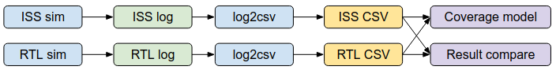

Welcome to riscv-dv’s documentation!¶
Overview¶
RISCV-DV is a SV/UVM based open-source instruction generator for RISC-V processor verification. It currently supports the following features:
- Supported instruction set: RV32IMAFDC, RV64IMAFDC
- Supported privileged mode: machine mode, supervisor mode, user mode
- Page table randomization and exception
- Privileged CSR setup randomization
- Privileged CSR test suite
- Trap/interrupt handling
- Test suite to stress test MMU
- Sub-program generation and random program calls
- Illegal instruction and HINT instruction generation
- Random forward/backward branch instructions
- Supports mixing directed instructions with random instruction stream
- Debug mode support, with fully randomized debug ROM
- Instruction generation coverage model
- Communication of information to any integrated SV testbench
- Co-simulation with multiple ISS : spike, riscv-ovpsim
A CSR test generation script written in Python is also provided, to generate a directed test suite that stresses all CSR instructions on all of the CSRs that the core implements.
Getting Started¶
Prerequisites¶
To be able to run the instruction generator, you need to have an RTL simulator which supports SystemVerilog and UVM 1.2. This generator has been verified with Synopsys VCS, Cadence Incisive/Xcelium, and Mentor Questa simulators. Please make sure the EDA tool environment is properly setup before running the generator.
Install RISCV-DV¶
Getting the source
- Install git
git clone https://github.com/google/riscv-dv.gitcd riscv-dv
There are two ways that you can run scripts from riscv-dv.
For developers which may work on multiple clones in parallel, using directly run by python3 script is highly recommended. Example:
pip3 install -r requirements.txt # install dependencies (only once)
python3 run.py --help
For normal users, using the python package is recommended. First, cd to the directory where riscv-dv is cloned and run:
export PATH=$HOME/.local/bin/:$PATH # add ~/.local/bin to the $PATH (only once)
pip3 install --user -e .
This installs riscv-dv in a mode where any changes within the repo are immediately available simply by running run/cov. There is no need to repeatedly run pip install . after each change. Example for running:
run --help
cov --help
Setup RISCV-GCC compiler toolchain¶
- Install riscv-gcc toolchain
- Set environment variable RISCV_GCC to the RISC-V gcc executable executable. (example: <install_dir>/bin/riscv32-unknown-elf-gcc)
- Set environment variable RISCV_OBJCOPY to RISC-v objcopy executable executable. (example: <install_dir>/bin/riscv32-unknown-elf-objcopy)
Sample .bashrc setup:
export RISCV_TOOLCHAIN=<riscv_gcc_install_path>
export RISCV_GCC="$RISCV_TOOLCHAIN/bin/riscv32-unknown-elf-gcc"
export RISCV_OBJCOPY="$RISCV_TOOLCHAIN/bin/riscv32-unknown-elf-objcopy"
Setup ISS (instruction set simulator)¶
Currently three ISS are supported, the default ISS is spike. You can install any one of below to run ISS simulation.
- spike setup
- Follow the instructions to build spike
- Build spike with “–enable-commitlog”
- Set environment variable SPIKE_PATH to the directory of the spike binary
- riscv-ovpsim setup
- Download the riscv-ovpsim binary
- Set environment variable OVPSIM_PATH to the directory of the ovpsim binary
- whisper (swerv-ISS) setup
- Follow the instruction to install the ISS, and set WHISPER_ISS to the whisper binary
- sail-riscv setup
- Follow the sail-riscv steps to install sail-riscv
- Set environment variable SAIL_RISCV to the path of sail-riscv binary
Sample .bashrc setup:
export SPIKE_PATH=$RISCV_TOOLCHAIN/bin
export SAIL_RISCV="xx/xxx/ocaml_emulator"
export OVPSIM_PATH=/xx/xxx/riscv-ovpsim/bin/Linux64
export WHISPER_ISS="xx/xxx/swerv-ISS/build-Linux/whisper"
Running the generator¶
A simple script run.py is provided for you to run a single test or a regression.
You can use –help to get the complete command reference:
run --help
Here is the command to run a single test:
run --test=riscv_arithmetic_basic_test
You can specify the simulator by “-simulator” option:
run --test riscv_arithmetic_basic_test --simulator ius
run --test riscv_arithmetic_basic_test --simulator vcs
run --test riscv_arithmetic_basic_test --simulator questa
run --test riscv_arithmetic_basic_test --simulator dsim
run --test riscv_arithmetic_basic_test --simulator qrun
The complete test list can be found in base testlist yaml. To run a full regression, simply use below command:
run
You can also run multiple generator jobs in parallel through LSF:
run --lsf_cmd="bsub -Is"
Here’s a few more examples of the run command:
# Run a single test 10 times
run --test riscv_arithmetic_basic_test --iterations 10
# Run multiple tests
run --test riscv_arithmetic_basic_test,riscv_rand_instr_test
# Run a test with verbose logging
run --test riscv_arithmetic_basic_test --verbose
# Run a test with a specified seed
run --test riscv_arithmetic_basic_test --seed 123
# Skip the generation, run ISS simulation with previously generated program
run --test riscv_arithmetic_basic_test --steps iss_sim
# Run the generator only, do not compile and simluation with ISS
run --test riscv_arithmetic_basic_test --steps gen
# Compile the generator only, do not simulate
run --test riscv_arithmetic_basic_test --co
....
Run ISS simulation¶
You can use -iss to run with different ISS:
# Run ISS with spike
run --test riscv_arithmetic_basic_test --iss spike
# Run ISS with riscv-ovpsim
run --test riscv_rand_instr_test --iss ovpsim
# Run ISS with whisper (swerv-ISS)
run --test riscv_rand_instr_test --iss whisper
# Run ISS with sail-riscv
run --test riscv_rand_instr_test --iss sail
To run with ISS simulation for RV32IMC, you can specify ISA and ABI from command line like this:
# Run a full regression with RV32IMC
run --isa rv32imc --mabi ilp32
We have added a flow to run ISS simulation with both spike and riscv-ovpsim, the instruction trace from these runs will be cross compared. This could greatly speed up your development of new test without the need to simulate against a real RISC-V processor:
run --test=riscv_rand_instr_test --iss=spike,ovpsim
run --test=riscv_rand_instr_test --iss=ovpsim,whisper
run --test=riscv_rand_instr_test --iss=spike,sail
Run directed assembly/C tests¶
Sometimes it might be useful to run some hand-coded assembly/C tests to hit some corner cases:
# Run a single/multiple assembly/C test
run --asm_tests asm_test_path1/asm_test1.S,asm_test_path2/asm_test2.S
run --c_tests c_test_path1/c_test1.c,c_test_path2/c_test2.c
# Run regression with all assembly tests(*.S)/ C tests(*.c) under a given directory
run --asm_tests asm_test_path1,asm_test_path2
run --c_tests c_test_path1,c_test_path2
# Run mix between the assembly/C test and assembly/C tests under a directory
run --asm_tests asm_test_path1/asm_test1.S,asm_test_path2
run --c_tests c_test_path1/c_test1.c,c_test_path2
You could also use this approach to integrate the assembly/C tests from other sources to riscv-dv flow.
Configuration¶
Configure the generator to match your processor features¶
The default configuration of the instruction generator is RV32IMC (machine mode only). A few pre-defined configurations can be found under “target” directory, you can run with these targets if it matches your processor specificationi:
run # Default target rv32imc
run --target rv32i # rv32i, machine mode only
run --target rv32imc # rv32imc, machine mode only
run --target rv64imc # rv64imc, machine mode only
run --target rv64gc # rv64gc, SV39, M/S/U mode
If you want to have a custom setting for your processor, you can make a copy of existing target directory as the template, and modify riscv_core_setting.sv to match your processor capability.
// Bit width of RISC-V GPR
parameter int XLEN = 64;
// Parameter for SATP mode, set to BARE if address translation is not supported
parameter satp_mode_t SATP_MODE = SV39;
// Supported Privileged mode
privileged_mode_t supported_privileged_mode[] = {USER_MODE,
SUPERVISOR_MODE,
MACHINE_MODE};
// Unsupported instructions
riscv_instr_name_t unsupported_instr[] = {};
// ISA supported by the processor
riscv_instr_group_t supported_isa[] = {RV32I, RV32M, RV64I, RV64M};
You can then run the generator with --custom_target <target_dir>:
# You need to manually specify isa and mabi for your custom target
run --custom_target <target_dir> --isa <isa> --mabi <mabi>
...
Setup the memory map¶
Here’s a few cases that you might want to allocate the instruction and data sections to match the actual memory map
- The processor has internal memories, and you want to test load/store from various internal/externel memory regions
- The processor implments the PMP feature, and you want to configure the memory map to match PMP setting.
- Virtual address translation is implmented and you want to test load/store from sparse memory locations to verify data TLB replacement logic.
You can configure the memory map in riscv_instr_gen_config.sv:
mem_region_t mem_region[$] = '{
'{name:"region_0", size_in_bytes: 4096, xwr: 3'b111},
'{name:"region_1", size_in_bytes: 4096 * 4, xwr: 3'b111},
'{name:"region_2", size_in_bytes: 4096 * 2, xwr: 3'b111},
'{name:"region_3", size_in_bytes: 512, xwr: 3'b111},
'{name:"region_4", size_in_bytes: 4096, xwr: 3'b111}
};
Each memory region belongs to a separate section in the generated assembly program. You can modify the link script to link each section to the target memory location. Please avoid setting a large memory range as it could takes a long time to randomly initializing the memory. You can break down a large memory region to a few representative small regions which covers all the boundary conditions for the load/store testing.
Setup regression test list¶
Test list in YAML format
# test : Assembly test name
# description : Description of this test
# gen_opts : Instruction generator options
# iterations : Number of iterations of this test
# no_iss : Enable/disable ISS simulation (Optional)
# gen_test : Test name used by the instruction generator
# rtl_test : RTL simulation test name
# cmp_opts : Compile options passed to the instruction generator
# sim_opts : Simulation options passed to the instruction generator
# no_post_compare : Enable/disable log comparison (Optional)
# compare_opts : Options for the RTL & ISS trace comparison
- test: riscv_arithmetic_basic_test
description: >
Arithmetic instruction test, no load/store/branch instructions
gen_opts: >
+instr_cnt=10000
+num_of_sub_program=0
+no_fence=1
+no_data_page=1'b1
+no_branch_jump=1'b1
+boot_mode=m
iterations: 2
gen_test: riscv_instr_base_test
rtl_test: core_base_test
You can also add directed assembly/C test in the testlist
- test: riscv_single_c_test
description: >
single c test entry
iterations: 1
c_test: sample_c.c
- test: riscv_c_regression_test
description: >
Run all c tests under the given directory
iterations: 1
c_test: c_test_directory
gcc_opts:
# Some custom gcc options
- test: riscv_single_asm_test
description: >
single assembly test entry
iterations: 1
asm_test: sample_asm.S
- test: riscv_asm_regression_test
description: >
Run all assembly tests under the given directory
iterations: 1
asm_test: assembly_test_directory
gcc_opts:
# Some custom gcc options
Runtime options of the generator¶
| Option | Description | Default |
|---|---|---|
| num_of_tests | Number of assembly tests to be generated | 1 |
| num_of_sub_program | Number of sub-program in one test | 5 |
| instr_cnt | Instruction count per test | 200 |
| enable_page_table_exception | Enable page table exception | 0 |
| enable_unaligned_load_store | Enable unaligned memory operations | 0 |
| no_ebreak | Disable ebreak instruction | 1 |
| no_wfi | Disable WFI instruction | 1 |
| no_dret | Disable dret instruction | 1 |
| no_branch_jump | Disable branch/jump instruction | 0 |
| no_load_store | Disable load/store instruction | 0 |
| no_csr_instr | Disable CSR instruction | 0 |
| no_fence | Disable fence instruction | 0 |
| illegal_instr_ratio | Number of illegal instructions every 1000 instr | 0 |
| hint_instr_ratio | Number of HINT instructions every 1000 instr | 0 |
| boot_mode | m:Machine mode, s:Supervisor mode, u:User mode | m |
| no_directed_instr | Disable directed instruction stream | 0 |
| require_signature_addr | Set to 1 if test needs to talk to testbench | 0 |
| signature_addr | Write to this addr to send data to testbench | 0 |
| enable_interrupt | Enable MStatus.MIE, used in interrupt test | 0 |
| gen_debug_section | Disables randomized debug_rom section | 0 |
| num_debug_sub_program | Number of debug sub-programs in test | 0 |
| enable_ebreak_in_debug_rom | Generate ebreak instructions inside debug ROM | 0 |
| set_dcsr_ebreak | Randomly enable dcsr.ebreak(m/s/u) | 0 |
| randomize_csr | Fully randomize main CSRs (xSTATUS, xIE) | 0 |
Setup Privileged CSR description (optional)¶
This YAML description file of all CSRs is only required for the privileged CSR test. All other standard tests do not use this description.
CSR descriptions in YAML format
- csr: CSR_NAME
description: >
BRIEF_DESCRIPTION
address: 0x###
privilege_mode: MODE (D/M/S/H/U)
rv32:
- MSB_FIELD_NAME:
- description: >
BRIEF_DESCRIPTION
- type: TYPE (WPRI/WLRL/WARL/R)
- reset_val: RESET_VAL
- msb: MSB_POS
- lsb: LSB_POS
- ...
- ...
- LSB_FIELD_NAME:
- description: ...
- type: ...
- ...
rv64:
- MSB_FIELD_NAME:
- description: >
BRIEF_DESCRIPTION
- type: TYPE (WPRI/WLRL/WARL/R)
- reset_val: RESET_VAL
- msb: MSB_POS
- lsb: LSB_POS
- ...
- ...
- LSB_FIELD_NAME:
- description: ...
- type: ...
- ...
To specify what ISA width should be generated in the test, simply include the matching rv32/rv64/rv128 entry and fill in the appropriate CSR field entries.
Privileged CSR Test Generation (optional)¶
The CSR generation script is located at scripts/gen_csr_test.py. The CSR test code that this script generates will execute every CSR instruction on every processor implemented CSR, writing values to the CSR and then using a prediction function to calculate a reference value that will be written into another GPR. The reference value will then be compared to the value actually stored in the CSR to determine whether to jump to the failure condition or continue executing, allowing it to be completely self checking. This script has been integrated with run.py. If you want to run it separately, you can get the command reference with –help:
python3 scripts/gen_csr_test.py --help
Adding new instruction stream and test¶
Please refer to src/src/riscv_load_store_instr_lib.sv for an example on how to add a new instruction stream. After the new instruction stream is created, you can use a runtime option to mix it with random instructions:
//+directed_instr_n=instr_sequence_name,frequency(number of insertions per 1000 instructions)
+directed_instr_5=riscv_multi_page_load_store_instr_stream,4
// An alternative command line options for directed instruction stream
+stream_name_0=riscv_multi_page_load_store_instr_stream
+stream_freq_0=4
End to End Simulation Flow¶
We have collaborated with LowRISC to apply this flow for IBEX RISC-V core verification. You can use it as a reference to setup end-to-end co-simulation flow. This repo is still under active development, this is the recommended approach to customize the instruction generator while keeping the effort of merging upstream changes to a minimum.
- Do not modify the upstream classes directly. When possible, extend from the upstream classses and implement your own functionalities.
- Add your extensions under user_extension directory, and add the files to user_extension/user_extension.svh. If you prefer to put your extensions in a different directory, you can use “-ext <user_extension_path>” to override the user extension path.
- Create a new target directory and customize the setting and testlist
- Run the generator with
--custom_target <target_dir> --isa <isa> --mabi <mabi> - Use command line type override to use your extended classes.
--sim_opts="+uvm_set_type_override=<upstream_class>,<extended_class>" - If extending
riscv_asm_program_genclass is desired, must use this command line override:--sim_opts="+uvm_set_inst_override=riscv_asm_program_gen,<extended class>,'uvm_test_top.asm_gen'"
You can refer to riscv-dv extension for ibex for a working example.
We have plan to open-source the end-to-end environments of other advanced RISC-V processors. Stay tuned!
Generator Flow¶
Coverage Model¶
Functional coverage (work in progress)¶
This flow extracts functional coverage information from the instruction trace generated by ISS. It’s independent of the instruction generation flow and does not require a tracer implementation in the RTL. You can use this flow as long as your program can be run with an ISS supported in this flow. The flow parses the instruction trace log and converts it to a CSV trace format. After that, a SV test is run to process the CSV trace files and sample functional coverage from there.
The functional covergroup is defined in riscv_instr_cover_group.sv. It includes below major categories:
- Cover all operands for each instruction
- Hazard conditions
- Corner cases like overflow, underflow, divide by zero
- Aligned/unaligned load/store
- Positive/negative immediate value
- Forward/backward branches, branch hit history
- Hint instruction
- Illegal instruction
- All compressed and non-compressed opcode
- Access to all implemened privileged CSR
- Exception and interrupt
The functional covergroup is still under active development. Please feel free to add anything you are interested or file a bug for any feature request.
Before start, please check the you have modified riscv_core_setting.sv to reflect your processor capabilities. The covergroup is selectively instantiated based on this setting so that you don’t need to deal with excluding unrelated coverpoints later. You also need to get the Spike ISS or riscvOVPsim ISS (riscv-ovpsim) setup before running this flow:
# Process spike simulation log and collect functional coverage
cov --dir out/spike_sim
# Get the command reference
cov --help
# Run the coverage flow with predefined targets
cov --dir out/spike_sim --target rv32imc
The coverage sampling from the CSV could be time consuming if you have a large number of log to process. You can split them to small batches and run with LSF in parallel:
# Split the run to process 5 CSV at a time, and run with LSF
cov --dir out/spike_sim --lsf_cmd "bsub ....." -bz 5
Customize and Extend Generator¶
Add custom instructions¶
- Add the new instruction enum to riscv_custom_instr_enum.sv
CUSTOM_ADD,
CUSTOM_SUB,
...
- Add custom instruction definition to rv32x_instr.sv/rv64x_instr.sv
`DEFINE_CUSTOM_INSTR(CUSTOM_ADD, R_FORMAT, ARITHMETIC, RV32X)
`DEFINE_CUSTOM_INSTR(CUSTOM_SUB, R_FORMAT, ARITHMETIC, RV32X)
...
- Extend riscv_custom_instr.sv and implement key functions like get_instr_name, convert2asm
- Add RV32X/RV64X to supported_isa in riscv_core_setting.sv
Class Reference¶
Command Line Reference¶
Appendix¶
Trace CSV format¶
A standard CSV format is defined for the instruction execution trace. It’s used for co-simulation result comparison and functional coverage collection.
The CSV format includes the following fields:
- pc : Program counter (instruction memory address)
- instr: Instruction name
- gpr: General purpose register updated by the instruction (rd, fd, vd etc.)
- Format: <GPR name>:<Value>
- GPR can be any integer/floating point/vector register
- If more than one general purpose registers are updated, separate them with semicolon
- csr: Privileged CSR updated by the instruction
- The same format as the GPR field
- binary: Instruction binary
- instr_str: Instruction in assmebly format
- operand: Instruction operands
- pad: Unused
Here’s a sample of the CSV trace file:
pc,instr,gpr,csr,binary,mode,instr_str,operand,pad
ffffffff8000000c,c.addi,ra:daab700e,,000000b9,3,"c.addi ra, 14","ra,14",
ffffffff8000000e,lui,sp:ff8e6000,,ff8e6137,3,"lui sp, 0xff8e6","sp,0xff8e6",
ffffffff80000012,addi,sp:ff8e6541,,54110113,3,"addi sp, sp, 1345","sp,sp,1345",
ffffffff80000016,c.li,gp:00000000,,00004181,3,"c.li gp, 0","gp,0",
ffffffff80000018,lui,tp:80000000,,80000237,3,"lui tp, 0x80000","tp,0x80000",
ffffffff8000001c,lui,t0:f999d000,,f999d2b7,3,"lui t0, 0xf999d","t0,0xf999d",
ffffffff80000020,addi,t0:f999cbf0,,bf028293,3,"addi t0, t0, -1040","t0,t0,-1040",
ffffffff80000024,lui,t1:0416b000,,0416b337,3,"lui t1, 0x416b","t1,0x416b",
ffffffff80000028,addi,t1:0416b6ee,,6ee30313,3,"addi t1, t1, 1774","t1,t1,1774",
ffffffff8000002c,lui,t2:e6420000,,e64203b7,3,"lui t2, 0xe6420","t2,0xe6420",
...
To integrate a new ISS or processor with the co-simualtion or coverage flow, user must implement a python script to convert the custom trace log format to this CSV format. You can find a sample script here.